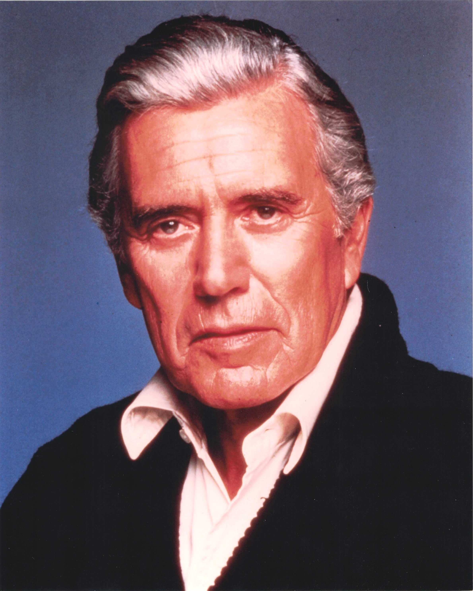

Product No. HEC-0069
$10
Shipping: $8.95
Description
8x10 color photograph
Full Description
John Forsythe (Deceased) was an American actor whose long career in film and television made him one of the most recognizable voices and personalities in classic television. Born Jacob Lincoln Freund on January 29, 1918, in Penns Grove, New Jersey, he began acting on stage before moving into motion pictures and television. Forsythe became especially famous as the voice of the mysterious Charles "Charlie" Townsend on "Charlie's Angels." Although Charlie was rarely seen, Forsythe's distinctive voice introduced the Angels' assignments and became one of the show's most memorable elements. He was also widely known for playing wealthy oil executive Blake Carrington on the prime-time television drama "Dynasty," which aired during the 1980s. His performance opposite Joan Collins and Linda Evans helped make the series an international hit and earned Forsythe Golden Globe Awards. Earlier in his career, he starred in the television sitcom "Bachelor Father" and appeared in films including Alfred Hitchcock's "The Trouble with Harry," "Topaz," and "In Cold Blood." Forsythe also worked extensively in radio, theater, and television throughout a career spanning more than five decades. He later returned as the voice of Charlie in the feature films "Charlie's Angels" and "Charlie's Angels: Full Throttle." John Forsythe died on April 1, 2010, at age 92. His roles in "Charlie's Angels," "Dynasty," and "Bachelor Father" continue to make his autographs, photographs, and television memorabilia popular with collectors.
Condition
Excellent condition